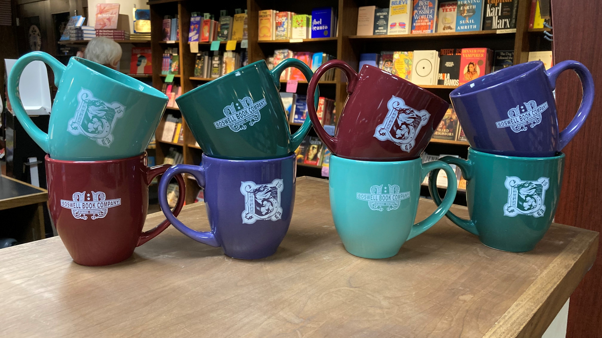

A brief history of Boswell Book Co.
Boswell Book Co. is an independent Milwaukee Bookstore. The brand is often influenced by it’s history and the previous owners. Boswell Books was previously owned by Harry W Schwartz, and was one of multiple Schwartz Book Stores, a local chain. It went out of business and was purchased by the current owner, Daniel Goldin, in 2009. The store underwent rebranding from 2009-2014. The company is named after the Scottish biographer and diarist James Boswell, which the Schwartz store used in it’s branding prior.
Boswell Book Co.'s Current Branding
Boswell Book Company's branding is very eclectic and mismatched, which has proven to be a successful choice. It is clear that the current state of the brand has been timely process, with colors and logos being acquired over time.

The brand has never been completely rebranded, but instead has slowly gained more aspects. This is in keeping with the brand’s goals. The brand has a very close knit relationship with it’s customers and is more personal than large booksellers. Therefore, rather than have a clean, simple, unified brand that’s goal is growth, is not what the company is looking for, but an eclectic, personal brand that makes people nostalgic for the bookstores pre-internet. The current goal of the company is to provide the community with the information and resources they want, in a pleasing environment. Overall, the branding is a complex system, and would be difficult to streamline or mass produce, while maintaining it’s integrity. This creates the impression that the sharing of knowledge in an authentic manner, is more important the competing with large book sellers
About the Rebrand
This rebrand aims to emphasize a more welcoming persona. The primary values include honesty, integrity, reliability, quality, and inclusivity. The rebrand focuses on a new logo, type style, and color palette. The rebrand should stay true to Boswell Books, taking successful pieces of the current branding and shifting them only to better fit the new values. An important part of this is creating a more streamlined, recognizable branding system, simplifying down to one logo, a set color palette, and limiting the amount of typefaces used. A recognizable branding system will establish Boswell as a staple of the community and create a more welcoming and approachable persona.